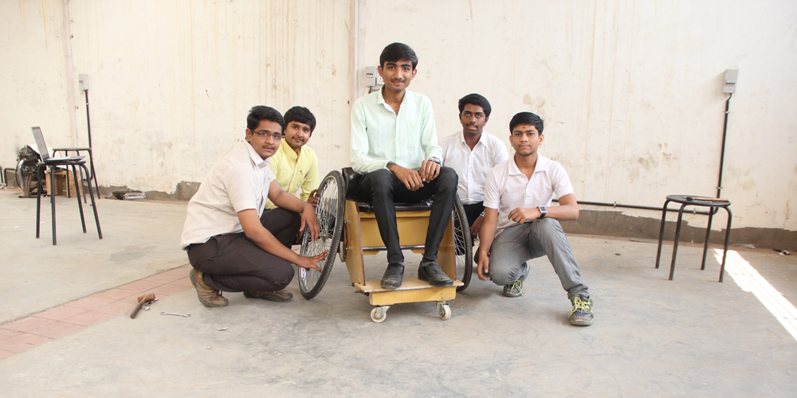

Case studies.
Koruza
Koruza is a DIY-friendly wireless optical communication system that offers a cheap and open-source alternative for connectivity in urban environments, connecting locations at up to 150 meters distance.

The device is a solution to the challenges of the cost of fibre installation and other infrastructure in dense urban areas. It provides an alternative for urban communities who want to create a local and independent internet infrastructure and local internet based services. Koruza has up to 1Gbps capacity - enough to support a large number of moderate internet users - and can be used to build large wireless networks.
The DIY version of Koruza device features a modular design with 3D-printed components designed in OpenScad, an open-source 3D modeling software. It is available to order as a kit, while the assembly instructions and technical documentation are released online for free. Researchers and indeed anyone with an interest - can replicate the device easily, understand its operation and modify it for their own purposes.
The Koruza project was developed by IRNAS, the Institute for Development of Advanced Applied Systems, in Maribor, Slovenia. The institute’s mission is to develop open-source and affordable systems that can solve real problems by empowering the masses. Since 2015, its founder Luka Mustafa has been a fellow of the Shuttleworth Foundation, which allowed him to work full-time on the development of Koruza.
Key DSI features
Koruza device is also distributed as a scientific DIY kit meant for researchers who are able to replicate, understand and modify it in order to gain the necessary skills in equipment construction. It has been designed starting from the analysis of a missing tech solution in the field of fibre communication and the problems of connecting dense urban areas. The project is supported by the local community organization WlanSlovenija Development that helps to apply a vast scientific knowledge to the creation of effective and affordable systems.
OpenDrop
OpenDrop is an open hardware-based design for microfluidics analysis. Microfluidics is the study of how fluids behave and can be controlled at the very smallest levels.
 The device uses recently-developed technology called “electro-wetting” to control small droplets of liquids. Using this technology, users can carry out digital biology experiments in the lab and in their own home. While the uses of the OpenDrop are currently quite specific and niche, its significance lies in the principles of openness, accessibility and collaboration which lie behind it. Inspired by other equipment like the DropBot and Microdrop software, OpenDrop was designed with a DIY and low-cost approach, and is part of a larger ecosystem of digital biology initiatives whose aim is to make digital biology and lab automation accessible to people. It was designed in accordance with the best practices for Open-Source Hardware (OSHWA) and the GOSH (Global Open Science Hardware) Manifesto.
The device uses recently-developed technology called “electro-wetting” to control small droplets of liquids. Using this technology, users can carry out digital biology experiments in the lab and in their own home. While the uses of the OpenDrop are currently quite specific and niche, its significance lies in the principles of openness, accessibility and collaboration which lie behind it. Inspired by other equipment like the DropBot and Microdrop software, OpenDrop was designed with a DIY and low-cost approach, and is part of a larger ecosystem of digital biology initiatives whose aim is to make digital biology and lab automation accessible to people. It was designed in accordance with the best practices for Open-Source Hardware (OSHWA) and the GOSH (Global Open Science Hardware) Manifesto.
The development process is continually shared and facilitated by the project leaders through presentations at public events, through involving different communities and initiatives, and through organizing interdisciplinary workshops. Initiated and developed in Switzerland, the project is currently at its second release and has been developed through the collaborative efforts of an international network of organisations and communities of biohackers, scientists and artists. Thanks to this collaboration, its applications now spread beyond science to fields such as art, music, games and education. The project was initiated by Urs Gaudenz (Gaudilabs) and developed by several communities including hackteria | open source biological art, BioFlux and digi.bio.
Key DSI features
Open Drop only uses standard and widely available components, materials, and production processes. The assembling does not rely on parts that are not available to individual customers or processes that require expensive setup costs. The fabrication is also accessible: the design files and software required to operate the hardware are released under open licenses. The development is shared and facilitated by the project initiators through the presentation in public events, the involvement of different communities and initiatives, the organization of interdisciplinary workshops.
OpenTechSchool
OpenTechSchool (OTS) is a distributed community that opens tech education to everyone. The initiative offers educational courses on technology through hands-on events taking place all across Europe. While the technology community has sometimes been guilty of excluding women and the elderly, OTS is actively inclusive and open to enthusiasts of all genders and ages.
OTS is a community initiative established in Berlin in April 2012. The idea came during a local RailsGirls event, a free tech workshop dedicated to an audience of women of all ages and backgrounds. The goal of OTS was to expand this concept of openness to all tech topics and to an audience of all genders and experience levels. Given this challenge, hundreds of people joined OTS as coaches, learners, organizers and sponsors in eight cities across Europe: Berlin, Bristol, Brussels, Dortmund, Göttingen, Hamburg and London.
OTS’s mission is to make tech education more accessible and inclusive. Programming is often viewed as something inaccessible, especially by people who have not attended university: this is a misconception OTS wants to break. Their events provide opportunities for adults to try coding by working with their peers in a safe learning environment, where volunteer coaches work with small groups.
The core values of OpenTechSchool reflect the spirit of digital social innovation in the field of education: the training material and all resources are shared with open licenses; the learners are empowered by a progressive learning process that enables them to become coaches themselves; the guidelines to organise workshops with other organisations are also shared, in order to facilitate the creation of a distributed network of similar initiatives. OTS promotes non-profit education; coaches and team members donate their own time for the greater good of the learners and the community. This approach makes the programmes accessible and low-cost.
Key DSI features
Every node of OpenTech School in Europe uses Meet-up as the main platform for sharing information about workshops and events. A curated web platform allows people to access all open source material and teaching resources that are shared on GitHub and translated into many languages. The initiative provides a hands-on learning experience in which people create projects in a welcoming learning environment.
Precious Plastic
Precious Plastic is an open hardware and design project that offers a new way to recycle plastic. By releasing designs for a family of open source machines, the project promotes and supports the spread of personal and local workshops for the creation of objects out of raw recycled materials.
The Precious Plastic machines allow users to transform plastic bottles into flakes that can be compressed, injected or extruded to create new things. The only limit to what can be made is people’s imagination. All machines are designed to be inclusive and modular, enabling an easy building process; they are open source and all blueprints and instructions are released under the MIT License. Initiated by Dave Hakkens in 2013 as a thesis project at the Design Academy Eindhoven, it took him two years to scale from a research project on materials recycling to the prototype of the machines, and finally to a real functioning ecosystem of machines, blueprints and a community. From the mechanical drawings to the web video tutorials, all of the project’s components are developed collaboratively by volunteers and by the Precious Plastic community which is building and customising machines all over the world. Key to its success is the documenting process carried out through an online platform.
The website also features an updated map that shows all the contributors who are participating in the initiative, with the goal of cleaning the world of plastic waste. Currently, there are machine makers in thirty-six places across six continents; not only in the world’s richest countries (like the US and Western Europe) but also in the Maldives, the West Bank and Sri Lanka, for example. Precious Plastics launched a MONEY and PEOPLE campaign to spread plastic recycling around the world by:
– creating a series of products that can be made using their machines, with online tutorials to guide people; – developing their online platform to make collaboration easier; – providing starter kits to help people build Precious Plastic machines more easily; – developing business models that will enable people to make a living through the use of plastic waste.
Key DSI features
The plan and core scope of Precious Plastic is stated clearly in the project’s website, which has been designed to deliver all contents and documents that are necessary to allow other people to replicate the line of plastic recycling machines. The communication of the project is based on the combination of simple design and radical transparency that allows readers (and potential contributors) to understand the plan: to create a network of workshops in which recycling really happens, rather than a platform for selling design objects.
Prusa Research
Prusa machines are open-source 3D printers built upon the open hardware global initiative RepRap, which makes self-replicating and low-cost printers accessible to all.
Prusa Research is a company founded by the young maker Joseph Prusa, who started developing his first open hardware 3D printer when he was only 26. It now provides an open-source alternative to proprietary 3D printers and its models have rapidly grown to become the most widely used internationally.
The Prusa 3D-printers derive from the RepRap printer, which is made of 3D-printed parts so that anyone can copy and make their own self-replicating machines, democratising access to this new technology. The machines rely on a full open-source ecosystem of tools and are fully compatible with software tools such as Slic3r slicer, developed by the Italian Alessandro Ranellucci and Cura, developed by the Dutch 3D-printer firm Ultimaker.
The company has rapidly grown from its base in Prague: it now employs 40 people and offers customer service support to users as they assemble and customise their printers. Prusa was able to grow without a sales team, through word of mouth and with the support of the international maker community. Its models are direct competitors to the big names of the industry, which are based on proprietary models.
According to 3DHubs, an online 3D-printing community service, the Prusa i3 is the most used 3D-printer in the world and is now shipped to 90 countries.Prusa Research’s machines are open source, community driven, but they are also very good products: the latest machine offers a bigger build volume and faster printing. The quality of product is also related to the fact that this maker company based in Europe releases disrupting technological inventions all around the world, such as the full metal nozzle and the famous red PCB heated bed.
Key DSI features
Prusa i3 is one of the most used low-cost 3D printers in the world. The original Prusa i3 printers are shipped in ninety countries all around the world each month. The project started scaling because the technical quality of the 3D printer enabled the Prusa machines to compete with other existing, non-open source solutions available on the market. The founder and young maker, Joseph Prusa,worked on improving the user experience of a fully open hardware maker product, to provide a friendly procedure for assembling the hardware kit. Furthermore, the machines are upgradable so that people can turn their existing printer into a new model without having to a buy a new one.
TooWheels
TooWheels is an open-source DIY toolkit to build a sports wheelchair. It is low-cost, adaptable and easy to build. Too Wheels provides a low-cost and adaptable DIY alternative to expensive ready-made sports wheelchairs.

Makers are able to download the open-source wheelchair blue-print, adjust the design based on their unique measurements and build the finished product from cheap and easily available materials such as plywood, metal tubing and bicycle wheels. If built correctly, for as little as €200 anyone across the world can own a sports wheelchair with the same performance as that of a €2,000 pre-made alternative. Fabrizio Alessi, founder of Too Wheels, first started designing the DIY wheelchair as a student after spending time volunteering with a disability charity.
Although state funding in Italy, Fabrizio’s home nation, provides standard wheelchairs for disabled people, the more expensive wheelchairs required for playing sports are not covered. Using TooWheels, children and adults alike are able to play a host of games including basket-ball, tennis, softball or rugby. TooWheels connects the ideals of open-source technology with the culture of making. There are two methods for building a TooWheels sports wheelchair:
– Download and print the A4 manual. When the printed pages are arranged in the correct order, they form a 1:1 template of each individual part. Creators can then use materials and tools from any local DIY store to cut individual pieces to the required dimensions, based on their own body measurements. No specialist skills are required. Once the component parts are attached together, the sports wheelchair is ready to use!
– A maker has access to a Computer Numeric Control (CNC) ma-chine (found in your local FabLab) and she or he can download the design in a digital format. When the digital design is input into the CNC machine, individual parts can be cut automatically.
Sports wheelchairs have been built using the TooWheels open-source design in various locations across the world; for example, a TooWheels wheelchair was built in Ecuador’s FabLab Yachay through a grant from the Fab Foundation. Elsewhere, students at India’s Gujarat Technological University have built their own sports wheelchair.
Key DSI features
TooWheels is an open source DIY sports wheelchair that can be made in a FabLab. It has been designed to fulfil the needs of multiple targets: from people with disabilities doing sports and organizations developing projects in developing countries, to charities and community organizations who will purchase pre-made wheelchairs, which are easily adjustable on site to fit individual needs. It is a project built upon the idea of distributed peer production for social good, and connected to key stakeholders such as the international FabLab network, the maker community and the organizations promoting sport activities for disabled people.